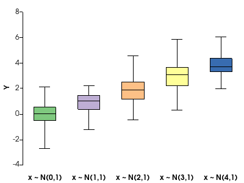
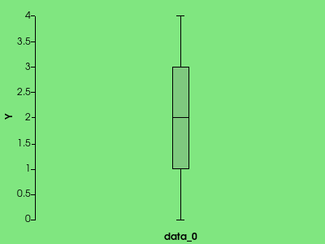
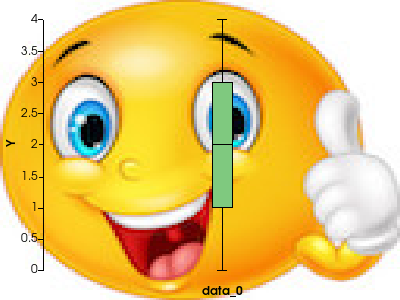
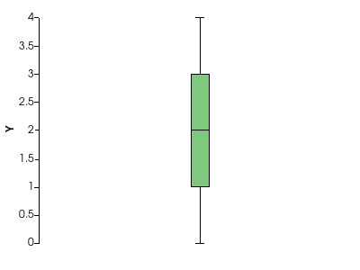
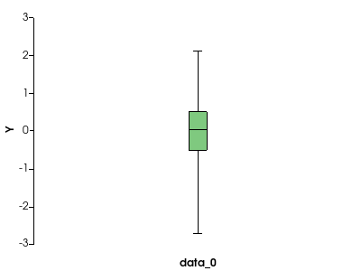
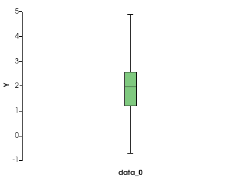
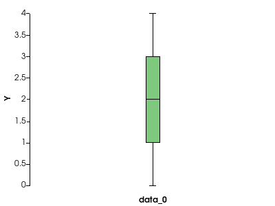
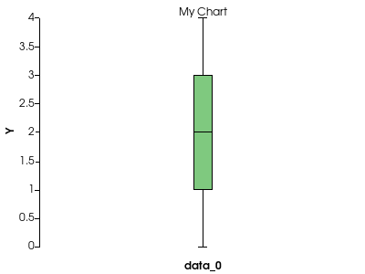

pyvista.ChartBox#
- class ChartBox(data, colors=None, labels=None)[source]#
Dedicated chart for drawing box plots.
- Parameters:
- data
listortupleofarray_like Dataset(s) from which the relevant statistics will be calculated used to draw the box plot.
- colors
listortupleofcolor_like,optional Color used for each drawn boxplot. Defaults to
None, which uses the default color scheme.- labels
listortupleofstr,optional Label for each drawn boxplot, as shown in the chart’s legend. Defaults to
[].
- data
Examples
Create boxplots for datasets sampled from shifted normal distributions.
>>> import pyvista >>> import numpy as np >>> rng = np.random.default_rng(1) # Seeded random number generator used for data generation >>> normal_data = [rng.normal(i, size=50) for i in range(5)] >>> chart = pyvista.ChartBox(normal_data, labels=[f"x ~ N({i},1)" for i in range(5)]) >>> chart.show()
 - property background_color#
Return or set the chart’s background color.
Examples
Create a boxplot chart with a green background.
>>> import pyvista >>> chart = pyvista.ChartBox([[0, 1, 1, 2, 3, 3, 4]]) >>> chart.background_color = (0.5, 0.9, 0.5) >>> chart.show()

- property background_texture#
Return or set the chart’s background texture.
Examples
Create a boxplot chart with an emoji as its background.
>>> import pyvista >>> from pyvista import examples >>> chart = pyvista.ChartBox([[0, 1, 1, 2, 3, 3, 4]]) >>> chart.background_texture = examples.download_emoji_texture() >>> chart.show()

- property border_color#
Return or set the chart’s border color.
Examples
Create a boxplot chart with a thick, dashed red border.
>>> import pyvista >>> chart = pyvista.ChartBox([[0, 1, 1, 2, 3, 3, 4]]) >>> chart.border_color = 'r' >>> chart.border_width = 5 >>> chart.border_style = '--' >>> chart.show()

- property border_style#
Return or set the chart’s border style.
Examples
Create a boxplot chart with a thick, dashed red border.
>>> import pyvista >>> chart = pyvista.ChartBox([[0, 1, 1, 2, 3, 3, 4]]) >>> chart.border_color = 'r' >>> chart.border_width = 5 >>> chart.border_style = '--' >>> chart.show()
- property border_width#
Return or set the chart’s border width.
Examples
Create a boxplot chart with a thick, dashed red border.
>>> import pyvista >>> chart = pyvista.ChartBox([[0, 1, 1, 2, 3, 3, 4]]) >>> chart.border_color = 'r' >>> chart.border_width = 5 >>> chart.border_style = '--' >>> chart.show()

- property legend_visible#
Return or set the visibility of the chart’s legend.
Examples
Create a boxplot chart with custom labels.
>>> import pyvista >>> chart = pyvista.ChartBox([[0, 1, 1, 2, 3, 3, 4]]) >>> chart.plot.label = "Data label" >>> chart.show()

Hide the legend.
>>> chart.legend_visible = False >>> chart.show()

- property loc#
Return or set the chart position in normalized coordinates.
This denotes the location of the chart’s bottom left corner.
Notes
The location of a ChartBox instance cannot be modified, it fills up the entire viewport by default.
- property plot#
Return the
BoxPlotinstance associated with this chart.Examples
Create a box plot from a standard Gaussian dataset.
>>> import pyvista >>> import numpy as np >>> rng = np.random.default_rng(1) # Seeded random number generator for data generation >>> chart = pyvista.ChartBox([rng.normal(size=100)]) >>> chart.show()
 Update the box plot (shift the standard Gaussian distribution).
>>> chart.plot.update([rng.normal(loc=2, size=100)]) >>> chart.show()

- show(off_screen=None, full_screen=None, screenshot=None, window_size=None, notebook=None, background='w', dev_kwargs={})#
Show this chart in a self contained plotter.
- Parameters:
- off_screenbool,
optional Plots off screen when
True. Helpful for saving screenshots without a window popping up. Defaults to active theme setting inpyvista.global_theme.full_screen.- full_screenbool,
optional Opens window in full screen. When enabled, ignores
window_size. Defaults to active theme setting inpyvista.global_theme.full_screen.- screenshot
stror bool,optional Saves screenshot to file when enabled. See:
Plotter.screenshot(). DefaultFalse.When
True, takes screenshot and returnsnumpyarray of image.- window_size
list,optional Window size in pixels. Defaults to global theme
pyvista.global_theme.window_size.- notebookbool,
optional When
True, the resulting plot is placed inline a jupyter notebook. Assumes a jupyter console is active.- background
color_like,optional Use to make the entire mesh have a single solid color. Either a string, RGB list, or hex color string. For example:
color='white',color='w',color=[1.0, 1.0, 1.0], orcolor='#FFFFFF'. Defaults to'w'.- dev_kwargs
dict,optional Optional developer keyword arguments.
- off_screenbool,
- Returns:
np.ndarrayNumpy array of the last image when
screenshot=Trueis set. Optionally contains alpha values. Sized:[Window height x Window width x 3] if the theme sets
transparent_background=False.[Window height x Window width x 4] if the theme sets
transparent_background=True.
Examples
Create a simple boxplot chart and show it.
>>> import pyvista >>> chart = pyvista.ChartBox([[0, 1, 1, 2, 3, 3, 4]]) >>> chart.show()

- property size#
Return or set the chart size in normalized coordinates.
A size of
(1, 1)occupies the whole renderer.Notes
The size of a ChartBox instance cannot be modified, it fills up the entire viewport by default.
- property title#
Return or set the chart’s title.
Examples
Create a boxplot chart with title ‘My Chart’.
>>> import pyvista >>> chart = pyvista.ChartBox([[0, 1, 1, 2, 3, 3, 4]]) >>> chart.title = 'My Chart' >>> chart.show()

- toggle()#
Toggle the chart’s visibility.
Examples
Create a boxplot chart.
>>> import pyvista >>> chart = pyvista.ChartBox([[0, 1, 1, 2, 3, 3, 4]]) >>> chart.show()

Hide it.
>>> chart.toggle() >>> chart.show()

- property visible#
Return or set the chart’s visibility.
Examples
Create a boxplot chart.
>>> import pyvista >>> chart = pyvista.ChartBox([[0, 1, 1, 2, 3, 3, 4]]) >>> chart.show()

Hide it.
>>> chart.visible = False >>> chart.show()